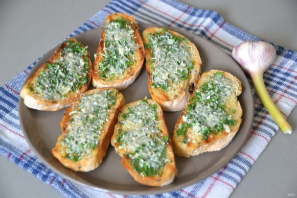

Ломтики хлеба с ароматным чесночным маслом, зеленью и сыром — это необыкновенно вкусно! Готовятся они за минуту и могут стать прекрасным перекусом или основой для бутербродов. Смотрите пошаговый рецепт!
Ингредиенты:
- Ломтики хлеба — 6-8 Штук
- Масло сливочное — 50 Грамм (размягченное)
- Чеснок — 3-4 Зубчиков
- Зелень — 20 Грамм (укроп, чеснок)
- Масло оливковое — 1 Ст. ложка
- Тертый сыр — 50 Грамм
Как приготовить "Хлеб с чесночным маслом"
- Подготовьте ингредиенты
- Чеснок пропустите через пресс
- Добавьте к чесноку измельченную зелень
- Добавьте к чесноку и зелени размягченное сливочное масло
- Вилкой смешайте масло с зеленью и с чесноком
- Обжарьте ломтики хлеба с добавлением небольшого количества оливкового масла
- Намажьте ломтики хлеба чесночным маслом
- Посыпьте сверху тертым сыром и отправьте в духовку для запекания при температуре 180 градусов примерно на 10 минут
- Ломтики хлеба с чесночным маслом получились очень вкусными, ароматными, хрустящими. Они хороши как сами по себе или их можно использовать в качестве основы для бутербродов